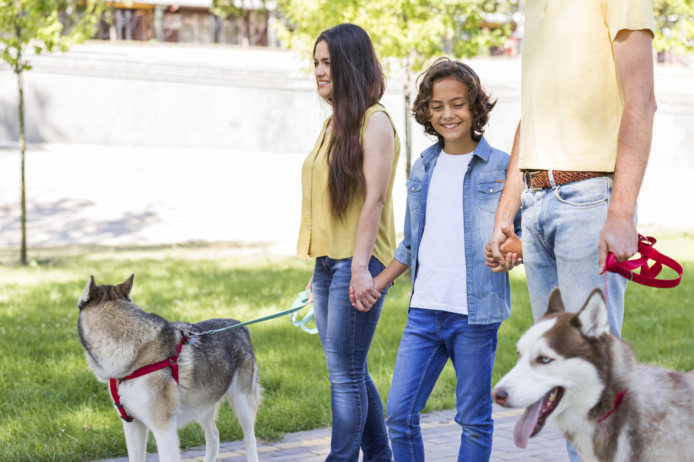

Historia
En Little Pets, amamos a las mascotas. Nuestra fundadora, Laura García, creó Pets and Cats en 2015 para ofrecer productos de calidad, seguros y funcionales para perros y gatos. Inspirada por su gato Tommy, buscó lo mejor en alimentación, juguetes y accesorios. Hoy, Little Pets es más que una tienda: seleccionamos cada producto con cuidado, colaboramos con protectoras y ayudamos a fortalecer el vínculo entre dueños y mascotas. ¡Únete a nuestra familia y dale a tu mascota el cuidado que merece!
Galeria de fotos
